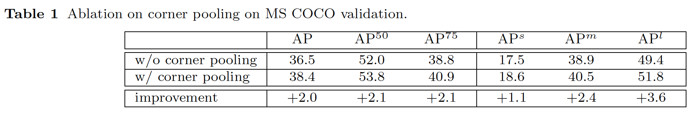

- Author: Hei Law, Jia Deng
- Paper: https://arxiv.org/pdf/1808.01244.pdf
- Conference: European Conference on Computer Vision (ECCV), 2018
- Code: https://github.com/princeton-vl/CornerNet
Abstract
This paper didn’t use anchor box in object detection field. (Anchor-free)
Predict left-top corner and right-bottom corner. So that, the the two corner form a bounding box.
論文中並未使用到Anchor-box，是一篇Anchor-free的方法。
預測左上角及右下角兩個點。進而組成一個bounding box(預測框)。
Model
It use Hourglass Network to take feature map. Most of object detection architecture use ResNet or VGG to take feature. (Hourglass Network is suit for predict corner, e.g. pose estimation)
Propose corner pooling to better localize the corners by encoding explicit prior knowledge.
The output include heatmap, embeddings and offsets.
- Heatmap: Decide the position of corner.
- Embedding: Grouping the left-top and right-bottom corner.
- Offsets: Calculate the offset of the corner position.
使用Hourglass Network 為 backbone。 大部分object detection的work都使用ResNet or VGG來提取feature。 （Hourglass Network 大多是用來預測“點”，像是pose estimation這類的work）
提出corner pooling，提高定位corner的準確度。
output有heatmap, embeddings and offsets.
- Heatmap: 決定“點”位置。
- Embedding: 為了要組合“左上角點”以及“右下角點”。
- Offsets: 計算偏差量。
Loss Function
This is for heatmap loss. Although there is no anchor-box, all of the feature map position can be a corner. It still will be too much imbalance between positive position and negative position. So the paper also use Focal Loss as Loss function.
這個是用在heatmap上的loss。 雖然沒有用到anchor-box，但依然利用整個feature map當作預測位置。依然會有正負樣本不平衡的問題，因此利用了Focal Loss來解決正負樣本不平衡的問題。
This loss is for offsets. It adjust the corner locations before remapping them to the input resolution.
這個是用在offsets上的loss。 為了調整“點”到input image 解析度上更精確的位置。
This loss is for embeedding. etk is the top-left corner embedding vector. ebk is the bottom-right corner embedding vector. And ek is the average of etk and ebk.
(4) make the closer embedding vector between etk and ebk.
(5) make the different embedding vector which means different corner far away.
此loss是用來修正embeedding feature map。etk 是左上角點的 embedding vector. ebk 是右下角點的 embedding vector. ek 是 etk 和 ebk 的平均值。
(4) 是將 etk 和 ebk 的 embedding vector 拉近。
(5) 是為了將不同“點”的 embedding vector 遠離。
This combine all of the loss function. \(\alpha\), \(\beta\), \(\gamma\) is hyperparameter.
\(\alpha\) = 0.1,
\(\beta\) = 0.1,
\(\gamma\) = 1
Experiement

It show up that the corner pooling can improve a lot of accuracy.
上方圖表可以顯示出，corner pooling 確實可以幫助 CornerNet 提高精確度。
Above Table compare with most of object detection work. It can be SOTA in one-stage ways.
上方圖表比較了大部分常見的object detection的方法，在one-stage上可以達到最佳的效果。
Conclusion
This paper propose a new idea for one-stage object detection. It actually broke the old frame and provide a new research way for us. Although it also not good at inference time, I think that this idea will bring huge impact on one-stage object detection.
此論文提出一個新的one-stage object detection概念。顛覆以往常用anchor的框架的模式。雖然在時間上依然無法有顯著的成長，但我認為他的概念會對未來one-stage object detection造成巨大的影響。